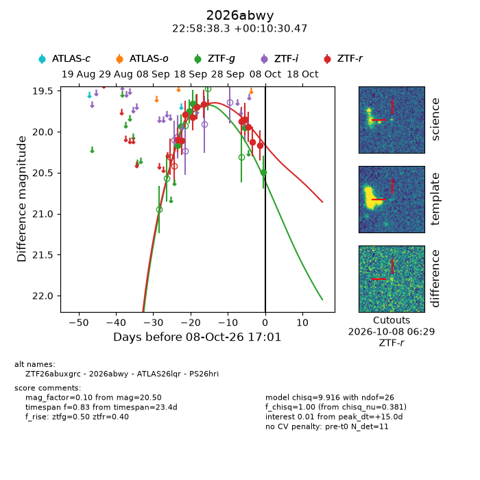
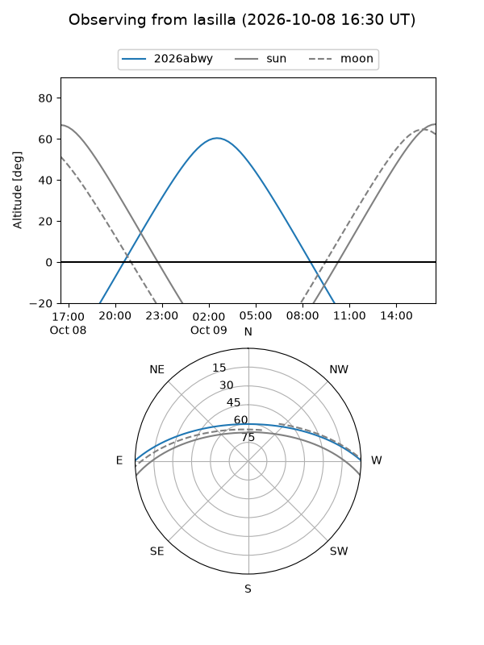
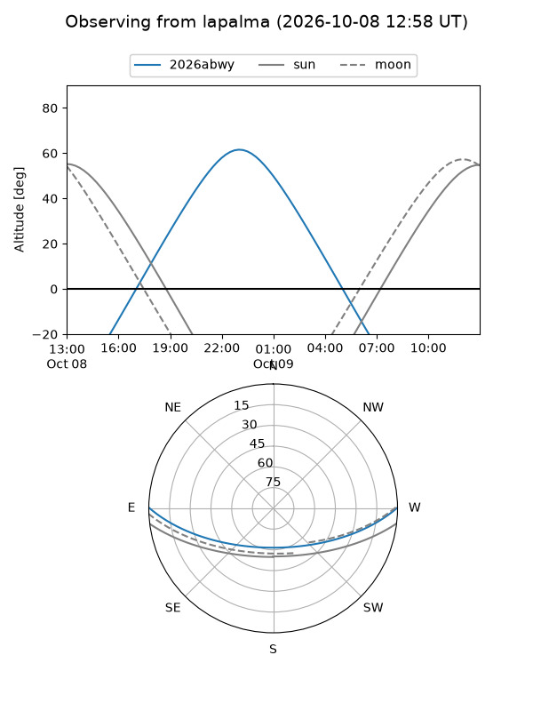
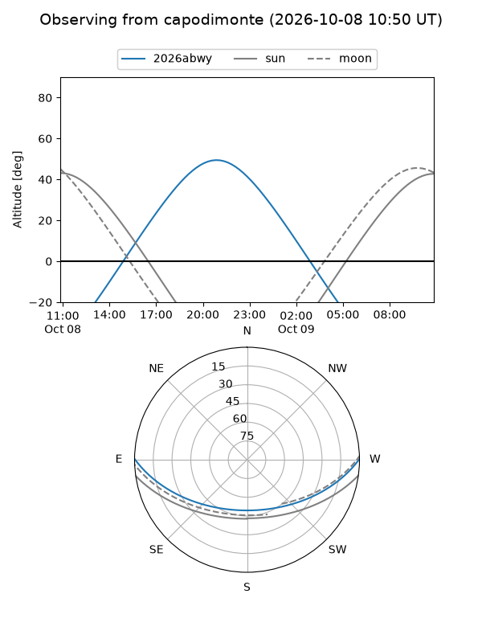
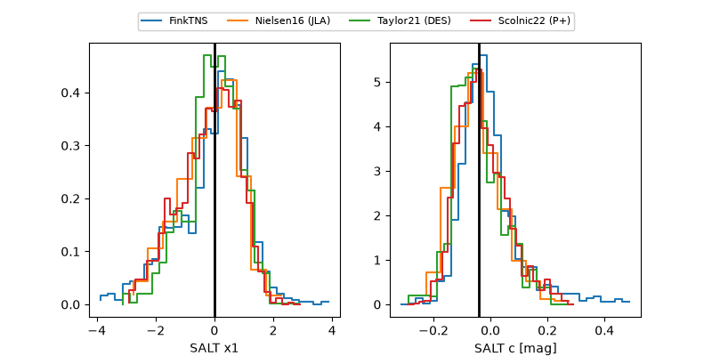

2026abwy
Target 2026abwy at 2026-10-08 17:04
Aliases and brokers:
FINK-ZTF: ztf.fink-portal.org/ZTF26abuxgrc
Lasair-ZTF: lasair-ztf.lsst.ac.uk/objects/ZTF26abuxgrc
ALeRCE-ZTF: alerce.online/object/ZTF26abuxgrc
YSE-PZ: ziggy.ucolick.org/yse/transient_detail/2026abwy
TNS name: wis-tns.org/object/2026abwy
Direct TNS query: direct search
alt names
ZTF26abuxgrc (ztf,fink_ztf)
2026abwy (tns,yse)
ATLAS26lqr (atlas)
PS26hri (panstarrs)
Coordinates:
equatorial (ra, dec) = 344.6595,+0.17513
equatorial (HMS+DMS) = 22:58:38.28,+00:10:30.47
galactic (l, b) = (73.5008,-51.53167)
Flags:
TNS type: nan
peak dt: +15.0
Photometry:
last ztfg=20.50, ztfr=20.17
7 ztfg, 11 ztfr detections
Lightcurve

Visibility



Additional plots
